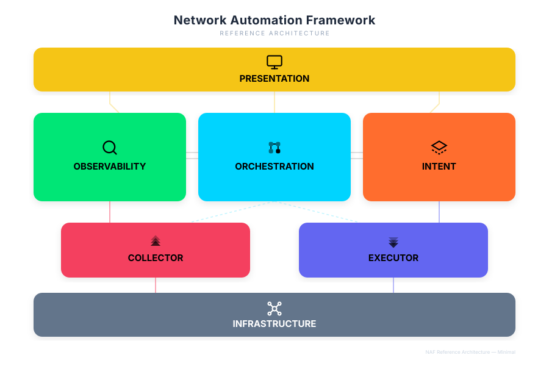

What is the NAF Framework?#
The Network Automation Forum (NAF) publishes a vendor-neutral reference framework for network automation systems. It describes six functional building blocks — Intent, Executor, Collector, Observability, Orchestrator and Presentation — "besides the actual network infrastructure", and states for each block what a system MUST, SHOULD or MAY do. SATOM is mapped to the NAF Framework: every feature in the console has a place in one of those blocks, and the gaps between what the framework asks for and what SATOM does are written down, not implied.
- Source: Network Automation Forum, The NAF Framework, https://reference.networkautomation.forum/Framework/Framework/
- Repository and licence: https://github.com/Network-Automation-Forum/reference, released under CC0 1.0 (public domain). The text and the diagram below are reproduced from it with attribution.
- Pinned revision: the framework carries no version number, so SATOM's
mapping names the commit it was read at —
da82b12(2026-04-28). A later rewrite of the framework cannot silently change what the mapping means; the release checklist diffs the upstream text against the pin at every cut.

ℹ️Note — The matrix is published with the product, not here
This article explains the mapping and the names. The conformance matrix —
one row per MUST / SHOULD / MAY requirement, its state and the file in SATOM
that is the evidence — lives in the product documentation, where a test
derives from it the only verdict sentence the documentation may use and the
count of documented deviations. Read it at
docs/naf-alignment.html on the product site, or on any node at
/manual/docs/naf-alignment.html (see
Documentation on the node). That page is the
current state; this one does not repeat it.
Why SATOM aligns with it#
- It is vendor-neutral and community-maintained. Nobody's product is the yardstick.
- MUST / SHOULD / MAY make conformance checkable. Each requirement is a row with a state, not an opinion.
- It gives a shared vocabulary with customers, auditors and integrators: "SATOM is your Executor and Observability for the Fortinet estate" is a sentence everyone can place.
- It lets SATOM sit as one block in a customer's stack — their NetBox as Intent, their SIEM as Observability, SATOM as the Fortinet-specific Collector / Executor / Orchestrator — because the blocks talk through documented APIs.
- It is a yardstick for the roadmap. A gap in the matrix is a planned feature with a known reason, not a surprise in a tender.
There is no NAF certification. SATOM is mapped to the framework; the matrix says how far.
The six blocks, in SATOM's words#
SATOM predates its mapping, so several features carry names of their own. The table says what SATOM calls each block's contents; the framework's name is the one to use when talking to someone who knows the framework.
| NAF block | What SATOM calls it |
|---|---|
| Intent (desired state) | Templates, Template bindings, Baselines (template combos), the Exception Library, Change types and the secret vault |
| Observability (history of the actual state, insight, events) | Source of Truth (configuration history), Monitoring and the metrics store, the health engine and its alerts, Drift, Sentinel, Scout, the Release Advisor |
| Collector (reading the live network) | Device sync, Deep capture, Metrics collection (scrape targets), SNMP polling, the syslog receiver, Log collection and the FortiAnalyzer log view |
| Executor (writing to the network) | CLI writer, Policy ops and Clone, Provisioning, the write actions of the catalogue, Firmware upgrade, Observatory fixes |
| Orchestrator (coordinating the blocks) | Processes (Studio), Scheduled Actions, Change Requests and the change-request orchestrator, Integration hooks |
| Presentation (how people and machines reach it) | The web console, the satom command line, API v1 with its OpenAPI document, the Documentation Center, notifications (bell, e-mail, webhook, syslog) |
| Infrastructure (the network itself) | The managed appliances: FortiWeb, FortiADC, FortiGate, FortiAnalyzer, FortiAuthenticator |
Names that collide#
Five SATOM names mean something else in the framework. Keep them apart:
- "Source of Truth" is Observability, not Intent. SATOM's Source of Truth stores the actual configuration of every appliance, version by version — the framework calls history of the actual state Observability. The framework's Intent — the desired state — is what SATOM calls Templates and Baselines. See Data and storage and the Template library.
- The Knowledge Harvester is not the Collector. It harvests vendor knowledge (which fields a firmware build serves, release notes); the NAF Collector reads the network's state. See API library.
- A Process step's "executor" is not the Executor. In the code, the handler that runs one step of a Process is called an executor; the NAF Executor is the block that writes to devices (the CLI writer, the write actions).
- The reconciler is not the Orchestrator. SATOM's reconciler keeps a standby node's code in step with the primary — deployment and high availability, see High availability. The NAF Orchestrator is Processes, Scheduled Actions and Change Requests.
- "Baselines" means two things. In the Template Library a baseline is a combo of templates for a zone, line and department (Intent); in Sentinel a behavioural baseline is what a device normally does (Observability).
What each block looks like in SATOM today#
Since release 3.4.0 every block has both a console face and an API face.
Intent#
Desired state is the versioned Template library with its
approval workflow, the bindings that tie a template to an appliance with
per-device variables, and the baselines that group templates by
classification. The REST API reads all three (/templates,
/bindings, /baselines) and, with the explicit capabilities
template_draft and template_apply, creates, edits, binds, approves and
applies them through the console's own dry-run and canary path — never a
direct write to a device. The model is Fortinet-specific by design; the
framework's "vendor-neutral representation" is a documented deviation.
Observability#
The Source of Truth keeps every configuration version;
the metrics store keeps 396 days of readings; the health engine evaluates
checks every 15 minutes and routes findings to five sinks
(Alerting). The API exposes configuration history and diffs
(/appliances/<id>/config-history, config-diff), the current findings
(/findings) and a read-only MetricsQL query (/metrics/query) over SATOM's
own satom_* series. The framework's "event when the actual state differs
from the intended one" is the Intent deviation check: a bound device that
no longer matches its template is a finding, a Compliance column and the hook
event intent.deviation.
Collector#
Device sync and deep capture read the appliances' REST and CLI; the scrape targets of Metrics collection read their counters; FortiAnalyzer supplies logs. Beyond the device APIs, an opt-in SNMP v2c collector polls uptime, interfaces, CPU, memory and disk, and a syslog receiver inside the scheduler takes messages from known senders. Stated exclusions: SNMPv3, SNMP traps, flow telemetry (NetFlow, sFlow) and packet capture. Normalisation is across firmware builds and channels of one vendor, not across vendors.
Executor#
Every write goes through the CLI writer or the REST clients, behind a diff shown before it is applied, a transactional CLI session that aborts on the first error, and a read-back that verifies the write (Object editor, Policy cloning, Provisioning, Firmware upgrade).
Orchestrator#
Processes coordinate the other blocks without touching a device
themselves: they can now start from an event (an alert, a failed upgrade, an
approved change), from the Walk a process scheduled action, or from the
API (/processes/<id>/run, rehearsal unless the token holds process_arm),
and a Compensate step undoes what a walk wrote. Change requests
and Integration hooks are the other two doors of the same
block.
Presentation#
The console, the satom command line, the Documentation Center and the
notification sinks; and for machines, API v1 with an OpenAPI 3.0 document
built at request time from the live routes (GET /api/v1/openapi.json), so a
route added tomorrow is documented the moment it is registered.
Reading the matrix#
The matrix page lists every requirement of the framework as a row: block,
level (MUST / SHOULD / MAY), the requirement in the framework's words, the
state — met, partial, gap, accepted-gap with its reason, or n/a —
and the file in SATOM that is the evidence. A test in SATOM's own suite parses
the page, checks that every evidence file exists, counts the MUST rows that
are not met and allows exactly one verdict sentence for that count. The same
test refuses any stronger claim in the product documentation, and this
Documentation Center's build refuses it too. When a release changes a row,
the release changes the matrix in the same commit.